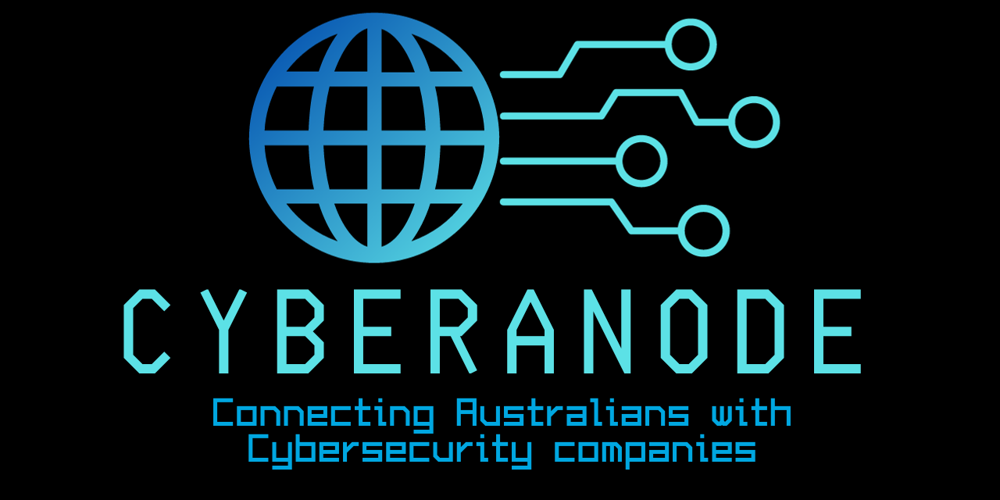

Welcome to CyberAnode, your go-to directory for verified cyber security services in Australia. In response to the evolving digital landscape and the need for a reliable resource, we have created CyberAnode to connect businesses and individuals with reputable cyber security companies.
CyberAnode aims to address the shortcomings of existing platforms by providing a curated list of cyber security companies that offer verified services. Unlike other directories, we prioritise accuracy and transparency to ensure that users can confidently choose the right cyber security partner for their specific needs.
Reliability: We prioritise accuracy and reliability in our directory, ensuring that the listed companies meet stringent criteria.
Transparency: CyberAnode provides transparent information about each cyber security company, empowering users to make informed decisions.
Security: In the ever-changing landscape of cyber security, trust is paramount. CyberAnode helps you find reputable companies to secure your digital assets.
Browse Companies: Explore our directory to discover a wide range of cyber security services offered by verified companies.
Verify Services: Each company listing provides detailed information about the cyber security services they offer.
Connect: Contact the cyber security companies directly through the information provided on their respective pages.
Stay Informed: Check back regularly for updates and new additions to our curated directory.
We value your feedback! If you have suggestions, encounter issues, or want to recommend a cyber security company for inclusion, please contact us.
Thank you for choosing CyberAnode - your trusted source for verified cyber security services in Australia.